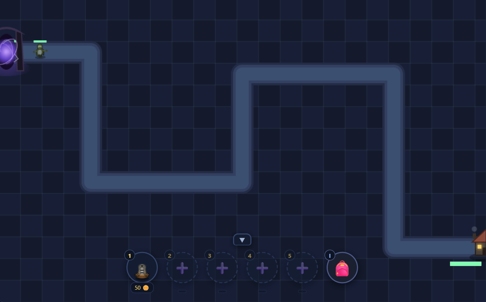
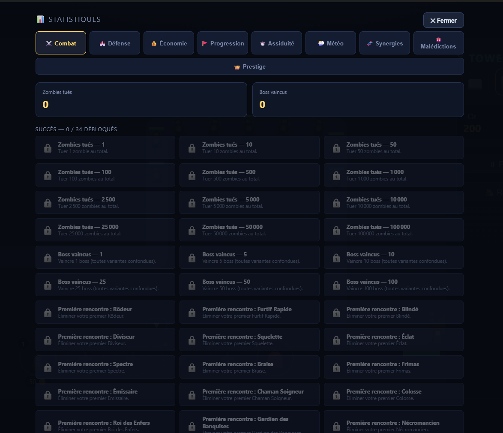

🏹 Tower Défense
Tower Défense Infini
Des vagues de zombies qui ne s'arrêtent jamais, des tours élémentaires à combiner en vraies synergies, et une météo qui change tout en plein combat.
Tower Défense Infini part d'une base que tu connais déjà : poser des tours, ralentir des ennemis, tenir la ligne. Canon et tour d'archer pour commencer — puis très vite, la partie change de nature. Les vagues n'ont pas de fin, et pour tenir, il faut débloquer et combiner des tours élémentaires : glace pour ralentir, feu pour brûler dans la durée, poison pour ronger, glu pour immobiliser. Chacune a ses forces, et les vraies combos apparaissent quand tu les fais travailler ensemble.
Une météo dynamique vient perturber le champ de bataille en cours de partie, et un système de Prestige permet de tout relancer avec des bonus permanents une fois que la vague en cours devient trop dure — pour repartir plus fort, encore et encore.

